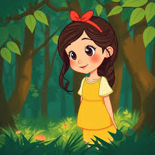

The sun rose slowly over the horizon, painting the sky with shades of pink, orange, and gold. Birds began their morning songs, filling the air with cheerful melodies. The dew on the grass sparkled like tiny diamonds as the first rays of sunlight touched them. People in the nearby village started their daily routines, some walking to the market while others tended to their gardens. The smell of fresh bread and coffee wafted through the streets, inviting everyone to start the day. Children laughed and played, chasing each other in the open fields, their energy infectious and joyful. The gentle breeze carried the scent of blooming flowers from distant gardens. Each moment felt alive and vibrant, reminding everyone of the beauty that a new day brings. Time seemed slower in the morning, allowing one to appreciate every small detail in the world. Life felt full of possibilities, waiting for anyone willing to embrace them fully.

She opened her diary and began to write, carefully putting down her thoughts and experiences. Every page was a mix of dreams, memories, and reflections, capturing the essence of her life. The words flowed naturally, as if the pen had a life of its own. Sometimes she paused to think, wondering about the choices she had made and the paths she had taken. Writing gave her a sense of clarity and peace, a chance to organize her thoughts. The smell of ink and paper brought a nostalgic feeling, reminding her of past years. She described her hopes, fears, and ambitions, creating a small world on each page. There was no judgment in this private space, only honesty and expression. At times, her entries were humorous, filled with silly observations, and at others, deeply reflective. Completing a page brought satisfaction and the promise of tomorrow's new thoughts. Often, she would read old entries, smiling at how much she had grown and learned.
Technology has transformed the way humans interact, creating connections that span across the globe. Social media, messaging apps, and video calls allow instant communication with anyone, anywhere. While these tools make life convenient, they also create challenges, such as the need to balance virtual and real-world interactions. People spend hours scrolling through feeds, sometimes forgetting the beauty of the physical world around them. Online communities can provide support and friendship, yet they can also foster misunderstandings and conflicts. Education, work, and entertainment have all been impacted significantly by digital technology. Learning new skills is easier than ever before, with resources available at one's fingertips. However, digital overload can cause stress and reduce the quality of personal connections. Finding a healthy balance is crucial to enjoy the benefits without suffering the drawbacks. Mindfulness, time management, and intentional engagement with technology are key strategies to maintain well-being. Over time, society continues to adapt to these changes, seeking harmony between innovation and human connection.
A gentle rain began to fall over the city, tapping on windows and rooftops with soft, rhythmic sounds. The streets shimmered with reflections of neon lights, creating a magical atmosphere at night. People rushed under umbrellas, their steps quick yet careful on the wet pavement. The smell of rain mixing with the scent of wet asphalt brought a nostalgic feeling to many. Cafés and shops became cozy havens, offering warmth and comfort to those inside. Some paused to watch the rainfall, enjoying the natural symphony that the storm created. Children splashed in puddles, laughter echoing in the otherwise quiet streets. Trees swayed gently with the wind, their leaves glistening in the droplets of rain. The world seemed to slow down, inviting reflection and calmness. Moments like these remind people of nature's beauty and its ability to create peaceful experiences. Soon, the rain would stop, leaving behind fresh air and the promise of a new beginning.
Traveling exposes one to new cultures, languages, and experiences, creating memories that last a lifetime. Every city, town, or village offers unique sights, sounds, and tastes to explore. Walking through bustling markets introduces travelers to local cuisine and handmade crafts. The architecture, often centuries old, tells stories of history and human ingenuity. Conversations with locals can reveal traditions, values, and perspectives that are entirely different from one's own. Adventure can be found in unexpected places, from quiet alleys to hidden natural wonders. Traveling requires flexibility and patience, as plans do not always go smoothly. Yet these moments often turn into the most memorable parts of the journey. Photography and journaling help preserve these experiences for years to come. By embracing the unfamiliar, travelers grow, learning more about the world and themselves. Each journey leaves a lasting impression that shapes future decisions and aspirations.
Gardening is a labor of love, requiring attention, patience, and care. Each plant has its own needs, from watering schedules to sunlight requirements. The soil must be tended, ensuring it remains fertile and healthy. Watching seedlings grow into full plants brings immense satisfaction and joy. Flowers bloom in various colors, filling gardens with vibrancy and life. Vegetables ripen slowly, rewarding the gardener’s dedication and persistence. Seasonal changes affect growth, requiring adaptation and planning. The scent of flowers and fresh soil provides a calming, almost therapeutic experience. Birds and insects add life to the garden, creating a small ecosystem of their own. Every day spent caring for the garden strengthens one’s connection with nature. Gardening teaches patience, responsibility, and the beauty of nurturing living things.
Music holds a special place in human culture, connecting emotions, memories, and creativity. Different genres convey distinct moods, from energetic rhythms to calming harmonies. Listening to favorite tunes can instantly change one’s mood, inspiring joy or reflection. Playing an instrument requires skill, practice, and dedication, yet provides rewarding expression. Concerts and live performances bring communities together, sharing experiences through sound. Composers and artists use music to tell stories, evoke feelings, and capture moments in time. Technology allows music to be shared widely, connecting people from diverse backgrounds. Music therapy is increasingly recognized for its positive effects on mental and emotional health. Lyrics often resonate deeply, creating a personal connection with listeners. The universal nature of music transcends language, culture, and borders. Every note and melody contributes to the rich tapestry of human expression.
Writing allows thoughts and ideas to flow freely, transforming abstract concepts into tangible words. Journaling can help organize emotions, clarify goals, and record memories. Stories, novels, and essays provide insight into human experience, creativity, and imagination. Writing requires focus, patience, and persistence, as ideas often need refinement. Feedback from others can help improve clarity, style, and impact. Creativity can flourish in the written word, exploring themes that may be difficult to express otherwise. Language has power, and the right choice of words can move, inspire, or inform readers. Writing also serves as a legacy, preserving thoughts and culture for future generations. Through writing, people connect across time and space, sharing knowledge and emotion. Whether for personal reflection or public communication, writing remains a vital skill in human society. Every piece contributes to the ever-expanding world of literature and ideas.
Friendship is one of the most meaningful aspects of human life, built on trust, understanding, and shared experiences. True friends support each other through challenges and celebrate successes together. Laughter, adventures, and heartfelt conversations strengthen bonds over time. Conflicts may arise, but communication and empathy help maintain relationships. Friends often influence decisions, values, and perspectives in subtle yet profound ways. Physical distance does not always weaken friendship, thanks to modern communication tools. Memories shared with friends often bring comfort and joy, even years later. The support system provided by friends can reduce stress and enhance overall well-being. Friendships teach important life lessons about compassion, patience, and compromise. Investing time and effort into relationships ensures they flourish and endure. The bonds of friendship are treasures that enrich life immeasurably.
Nature offers endless beauty and opportunities for exploration, from towering mountains to serene lakes. Observing wildlife, hiking trails, and experiencing seasonal changes create lasting memories. Natural landscapes inspire creativity, reflection, and appreciation for the environment. Conservation efforts help preserve ecosystems and biodiversity for future generations. Spending time outdoors improves mental and physical health, providing fresh air and exercise. Sunrises and sunsets, the sound of waves, and rustling leaves evoke a sense of wonder and peace. Natural wonders often become symbols of cultural and spiritual significance. Every adventure outdoors fosters respect for the earth and its delicate balance. Education and awareness encourage responsible interaction with nature. Connecting with the environment reminds humans of their place in the larger world. Nature’s rhythms and patterns bring a sense of calm and perspective, guiding everyday life.